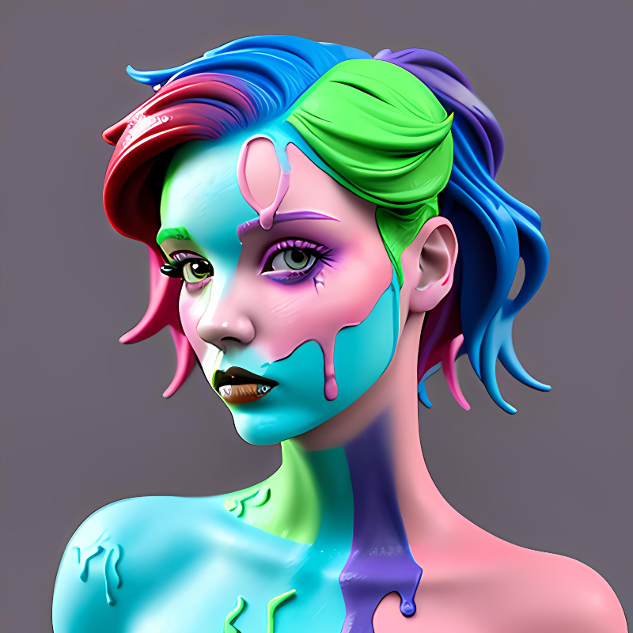

An artist who grew up in the dark undeveloped parts of the internet. I'm excited to announce my first art release, a small batch collection of NFT portraits called "reductio ad absurdum".
zero tokens
A #ZERO token is minted exclusively before the debut of each new collection. Serving as a forerunner to the upcoming collection. This standalone 1/1 NFT is not directly part of a collection, though it unveils the theme and artistic elements of the upcoming collection. The #ZERO token will proudly represent the collection throughout its promotional campaign as skeuomorph's PFP.
#ZERO

reductio ad absurdum collection
A vibrant and unique series of portraits (PFPs) that tell the stories of a diverse crew of artists, coders, and creatives who, like many of us, grew up in the unchartered realms of the internet.
Each portrait in the collection has been meticulously crafted. These characters embody the spirit of creativity, resilience, and rebellion, as they navigate the digital frontier and forge their own paths in this ever evolving world.
As you explore the collection, you'll encounter visionary artists, ingenious coders, and rebellious hackers who have come together to form a tight knit community. The collection is limited to 26 portraits, ensuring that each token is a scarce digital asset.
The reductio ad absurdum NFT collection is not just about the stunning visuals; it also aims to empower and inspire others to embrace their individuality and creativity in our vast digital world. By owning one of these NFTs, you celebrate the beauty of diversity, innovation, and the pursuit of dreams in Web3.

NFT GIVEAWAY
WIN ONE
OF THE FIRST FOUR
Follow these steps for a chance to win a portrait from the "reductio ad absurdum" collection:
1. follow @skeuomorphAI on Twitter (if you haven't already)
2. retweet skeuomorph's pinned Tweet
3. tag 2 friends (people you actually know) and let them know which NFT you'd like to win
4. complete above 3 steps before closure date - Sunday 14th May 2023
Winners will be announced shortly after closure date via skeuomorph's Twitter account.
#ONE

#TWO

#FIVE

#TEN

B-ROLL AIRDROP
With the captivating animated (GIF) format of the reductio ad absurdum collection, introducing:
The B-Roll edition, featuring static (PNG) versions of the animated NFTs. This special edition will be distributed exclusively to the first holders of the animated NFTs (competition winners and primary market buyers), offering collectors the flexibility to showcase either the static or animated NFTs, depending on platform compatibility. Embrace the power of choice and enhance your collection with versatile NFT options.
#FIVE
reductio
ad absurdum
#FIVE
B-Roll
edition
Post-Airdrop, no further editions of the reductio ad absurdum collection will be created.
Collection Numbering
Artworks in skeuomorph collections are identified using a list of numbers linked by a rule.
In this instance, the numerical sequence follows a 26 term quadratic progression, where the second differences are constant. To create the sequence, we choose a constant second difference of 2. We also assume the first term of the sequence to be 1.
Then we find the sequence of first differences: 1, 3, 5, 7, 9, 11, 13, 15, 17, 19, 21, 23, 25, 27, 29, 31, 33, 35, 37, 39, 41, 43, 45, 47, 49
The differences start at 1 and increase by 2 each time.
Then we generate the quadratic progression using the first term (1) and the first differences: 1, 1 + 1 = 2, 2 + 3 = 5, 5 + 5 = 10, 10 + 7 = 17, 17 + 9 = 26, 26 + 11 = 37, 37 + 13 = 50, 50 + 15 = 65, 65 + 17 = 82, 82 + 19 = 101, 101 + 21 = 122, 122 + 23 = 145, 145 + 25 = 170, 170 + 27 = 197, 197 + 29 = 226, 226 + 31 = 257, 257 + 33 = 290, 290 + 35 = 325, 325 + 37 = 362, 362 + 39 = 401, 401 + 41 = 442, 442 + 43 = 485, 485 + 45 = 530, 530 + 47 = 577, 577 + 49 = 626
Collection numbering:
| Number | Letter | Sequence |
|---|---|---|
| 1 | A | 1 |
| 2 | B | 2 |
| 3 | C | 5 |
| 4 | D | 10 |
| 5 | E | 17 |
| 6 | F | 26 |
| 7 | G | 37 |
| 8 | H | 50 |
| 9 | I | 65 |
| 10 | J | 82 |
| 11 | K | 101 |
| 12 | L | 122 |
| 13 | M | 145 |
| 14 | N | 170 |
| 15 | O | 197 |
| 16 | P | 226 |
| 17 | Q | 257 |
| 18 | R | 290 |
| 19 | S | 325 |
| 20 | T | 362 |
| 21 | U | 401 |
| 22 | V | 442 |
| 23 | W | 485 |
| 24 | X | 530 |
| 25 | Y | 577 |
| 26 | Z | 626 |